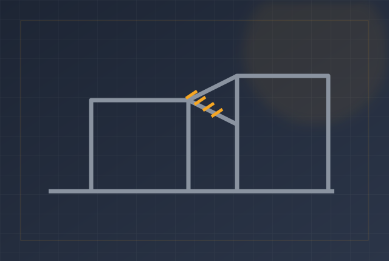
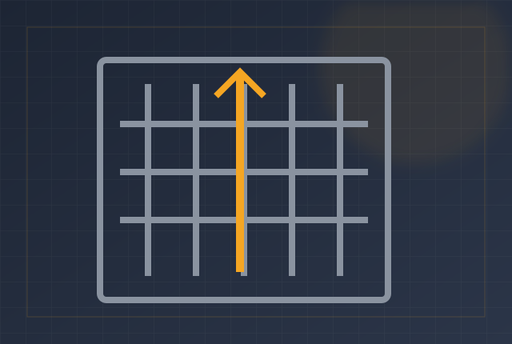
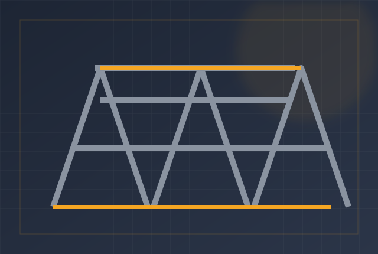

✦
Quality Craftsmanship
Careful fabrication, engineering discipline and attention to finish across every project.
Custom stainless and mild steel engineering, machinery manufacturing and fabrication — built to exact requirements in Paarl, Western Cape.
Bearma Staal is a family-owned engineering company based in Paarl, Western Cape. For more than 25 years, the business has built precision stainless and mild steel solutions for food, beverage and industrial applications.
From design and fabrication to custom machinery, CNC machining and structural steel, the focus remains simple: quality craftsmanship, reliable delivery and engineering built around the customer's exact requirements.
Quality craftsmanship, reliability and custom engineering — the values that have defined Bearma Staal for over two decades.
Careful fabrication, engineering discipline and attention to finish across every project.
A practical, dependable engineering partner for industrial and commercial requirements.
Purpose-built solutions designed around your equipment, process and operating environment.
Design, fabrication, CNC machining and structural steel — all under one roof in Dal Josafat.
Full design, fabrication and manufacturing of stainless and mild steel machinery and components.
Computer-controlled punching and press-brake bending for accurate, repeatable sheet steel work.
A complete in-house machine shop offering precision milling and turning services.
Structural steel manufacturing and fabrication for industrial and commercial builds.
A selection of machinery, fabrication and structural steel work.



For over 25 years, food, beverage and industrial clients across the Western Cape have depended on Bearma Staal.
“Bearma Staal built our custom grading line to exact spec. The build quality and food-grade finish is exceptional — they understand what a processing plant needs.”
“We have relied on Bearma for structural steel and conveyor work for years. Reliable, precise, and always delivered on time. A true family business you can trust.”
“From CNC punching to full fabrication, their in-house machine shop handles everything. The craftsmanship on our stainless elevators was first-rate.”
Tell us what you need engineered, fabricated or manufactured. Bearma Staal can help turn your requirements into a practical steel solution.
Start Your Project →